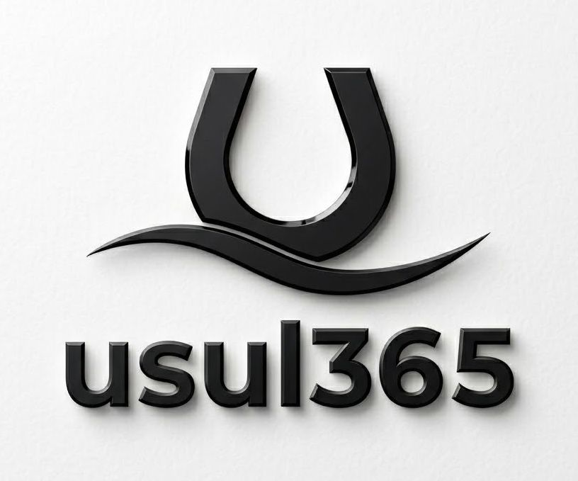

Bilgisayariniz icin gizlilik odakli, tamamen yerel calisan saglik ve bakim asistani.
USUL365 Guard, Windows bilgisayarinizin dosya, uygulama ve donanim sagligini tek bir bakista gostermek icin tasarlanmis bir masaustu uygulamasidir. Hicbir dosyaniz veya kisisel veriniz internete gonderilmez - tum analiz cihazinizda, yerel olarak calisir.
Disk sagligi, uygulama boyutu, program yuku, Windows guvenligi ve sistem kaynaklarindan hesaplanan tek bir sistem skoru.
Sectiginiz klasordeki buyuk dosyalari bulur. Sistem dosyalarina ve korumali isaretlediginiz dosyalara asla dokunmaz.
Her temizlik once simule edilir (Dry-Run), sadece siz onaylarsaniz uygulanir, ve istediginiz an tek tikla geri alinabilir.
CPU, GPU, RAM, depolama, ag karti ve BIOS bilgisi; guncelleme gerekenler icin dogru adimlar ve resmi linkler.
USUL365 Guard, tek seferlik bir uygulama degil - aktif olarak gelistirilen, canli bir projedir.
Microsoft Store uzerinden duzenli guncellemeler alacaksiniz: yeni ozellikler, iyilestirilmis analizler ve genisleyen donanim/uygulama destegi.
Geri bildirimleriniz dogrudan gelistirme yol haritamizi sekillendiriyor.
Uygulamayi nasil kullanacaginiza dair adim adim, ekran ekran anlatim icin detayli yardim sayfamiza goz atin.